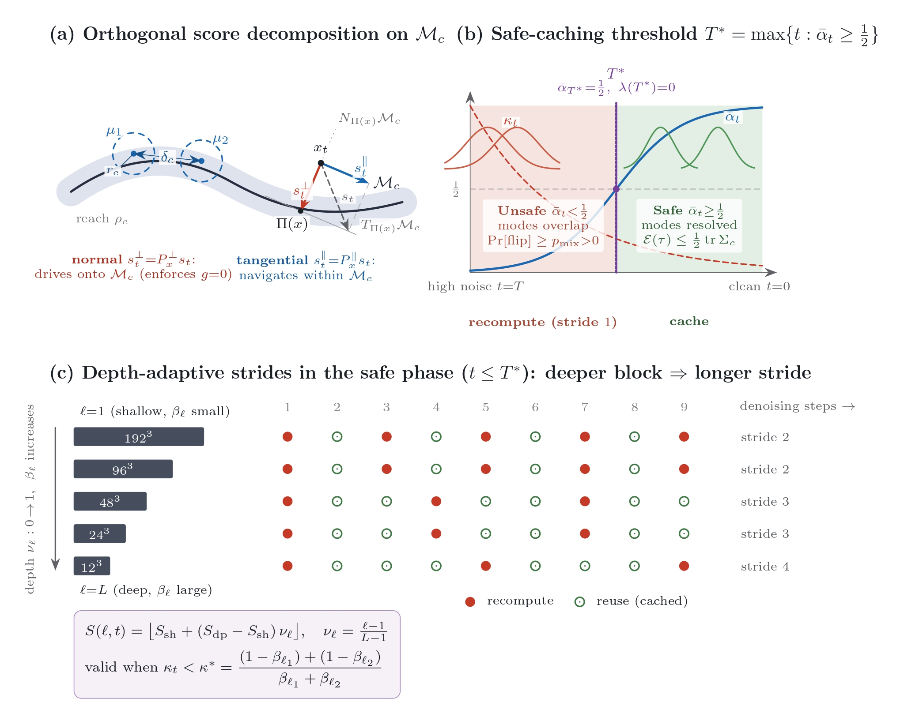
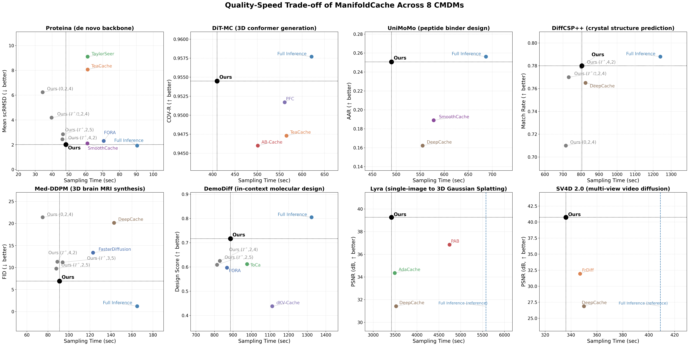

ManifoldCache is built on a simple geometric fact: constrained diffusion denoising can be split into a step that pushes samples onto the constraint manifold and a step that moves them within it. The figures below show why this split exists, exactly when it becomes safe to stop recomputing the network at every step, how the resulting cache schedule should vary across a network's depth, and the empirical performance of ManifoldCache compared with various baselines.

Figure 1. Geometric basis for safe, depth-adaptive caching on the constraint manifold $\mathcal{M}_c$.
(a) Orthogonal score decomposition on $\mathcal{M}_c$. For a noisy iterate $x_t$ with nearest projection $\Pi(x) \in \mathcal{M}_c$ (reach $\rho_c$), the denoising score $s_t$ decomposes uniquely into a normal and a tangential part with respect to the tangent space $T_{\Pi(x)}\mathcal{M}_c$ and normal space $N_{\Pi(x)}\mathcal{M}_c$ at the projection: the normal component $s_t^{\perp} = P_x^{\perp} s_t$ drives the iterate back onto $\mathcal{M}_c$, enforcing the constraint $g = 0$, while the tangential component $s_t^{\parallel} = P_x^{\parallel} s_t$ navigates within $\mathcal{M}_c$ toward one of the constraint-satisfying modes $\mu_1, \mu_2$, which are separated by a mode gap $\delta_c$ within a local ball of radius $r_c$. Caching perturbs $s_t^{\parallel}$, since off-manifold drift is corrected by $s_t^{\perp}$ regardless.
(b) Safe-caching threshold $T^{*} = \max\{\,t : \bar\alpha_t \ge \tfrac12\,\}$. Let $\bar\alpha_t$ denote the cumulative signal-retention coefficient of the forward process and let $\kappa_t$ measure the overlap between the score distributions induced by distinct constraint modes at step $t$. For $t > T^{*}$ (high noise, left / red), $\bar\alpha_t < \tfrac12$: the modes overlap, mode identity is not yet resolved, and caching risks a mode flip with probability $\Pr[\text{flip}] \ge p_{\text{mix}} > 0$ — this region must be recomputed at stride 1. For $t \le T^{*}$ (cleaner, right / green), $\bar\alpha_t \ge \tfrac12$: the modes are resolved ($\kappa_t$ curves separate), caching is provably safe, and the resulting error is bounded by $\mathcal{E}(\tau) \le \tfrac12\,\mathrm{tr}\,\Sigma_c$. $T^{*}$ is the sharp crossing point of this transition, where $\bar\alpha_{T^{*}} = \tfrac12$.
(c) Depth-adaptive strides in the safe phase ($t \le T^{*}$). Within the safe region, the cache stride assigned to a block of depth $\ell$ (out of $L$ total blocks, normalized depth $\nu_\ell = \frac{\ell-1}{L-1}$) grows with depth according to $$S(\ell,t) = \left\lfloor S_{\text{sh}} + \left(S_{\text{dp}} - S_{\text{sh}}\right)\nu_\ell \right\rfloor,$$ interpolating between a shallow-block stride $S_{\text{sh}}$ and a deep-block stride $S_{\text{dp}}$. This schedule is valid whenever $\kappa_t < \kappa^{*}$, where $$\kappa^{*} = \frac{(1-\beta_{\ell_1}) + (1-\beta_{\ell_2})}{\beta_{\ell_1} + \beta_{\ell_2}},$$ with $\beta_{\ell_1}, \beta_{\ell_2}$ the noise-sensitivity coefficients of the shallowest and deepest blocks being compared. Shallow, high-resolution blocks ($192^3, 96^3, \dots$) use short strides (e.g. stride 2), while deep, coarse blocks ($24^3, 12^3$) tolerate long strides (e.g. stride 4), so recomputes (filled markers) become sparser and cache reuse (open markers) becomes denser with depth.
The denoising score splits into two orthogonal forces: one pulls the sample back to the manifold (the normal component), the other navigates within valid structures (the tangential component). The pulling force dominates when noise is high; the navigating force dominates when signal is strong. The threshold $T^{*}$ marks the signal-to-noise crossover where the navigating force takes over. Before $T^{*}$, caching any block causes mode confusion; i.e., reusing features risks landing on the wrong valid structure. After $T^{*}$, caching is safe. In the safe regime, as deeper blocks are highly sensitive to pulling force (the normal component), they can be cached aggressively, while shallower blocks, being more sensitive to the navigating force (the tangential component), must recompute frequently. The depth-adaptive stride schedule follows directly from this geometry.

Figure 2. Quality–speed trade-off of ManifoldCache across all eight constrained diffusion models (CMDMs) evaluated in this work. Each panel plots sampling time against the model's primary quality metric (scRMSD, COV-R, AAR, Match Rate, FID, design Score, or PSNR); dotted crosshairs mark ManifoldCache's best configuration, and faded points show the ablation schedules reported in the corresponding table.
This is the empirical counterpart to the geometric argument in Figure 1: because caching is confined to the safe region $t \le T^{*}$ and made depth-adaptive within it, ManifoldCache is the only accelerator whose quality consistently stays within noise of full inference while running $1.5$–$2\times$ faster — often jointly dominating every baseline on both speed and quality simultaneously.